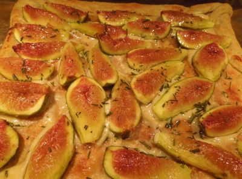

Honey on the comb becomes honey in marinade, baked sweets, remedies and more. Submit your photos and recipes.
Submit your favorite recipes that include honey as an ingredient along with a photo. Asches Urban Honey LLC will review your submissions and cook, barbecue or bake your recipe as submitted in our home test kitchen.
Winners are selected at the end of the month based on how the recipe turns out in our home kitchen and the quality of the photo.
Winners are announced on the Asches Urban Honey LLC facebook page. Recipes and photos will be posted on this website. Each winner receives a set of four handcrafted cards.
For inspiration check out the National Honey Board site below.
Photo and recipe by Janet Strong.
Add ingredients into your bread machine and process in the dough cycle.
Punch down dough, knead for a minute or so and braid into two loaves or one large loaf.
Let rise in the oven at 100 degrees for 1 hour.
Brush with egg yolk and sprinkle with sesame seeds or poppy seeds if you desire.
Bake at 350 degrees for 20-25 minutes until done.
Photo and recipe submitted by Mary Ann Aschenbrenner.
Whisk dry ingredients together in a medium bowl. Whisk wet ingredients until well combined in a large bowl. Add the dry ingredients to the wet and stir with a large spoon just until evenly incorporated.
Spoon batter into 9" by 5" buttered loaf pan. Smooth the top of the batter and tap the pan on the counter to settle the batter. If desired, sprinkle the top with pumpkin seeds.
Bake at 350 degrees for 60 minutes, checking for doneness after 45 minutes. To prevent bread from getting too brown, cover with aluminum foil toward the end of baking time. When a skewer inserted comes out clean, remove from oven and cool 15 minutes before transfering to bread rack. Cool completely before slicing.
Boil lemons with shredded ginger until rolling. Take off heat and strain through mesh strainer to remove pulp. Repeat straining process until the liquid is as clear as possible. Slowly blend in Asches Urban Honey until liquids meld. Transfer to a sterile jar and seal with a sterile lid.
You will have in your possession the best throat medicine money cannot buy. If your voice gets sore from talking, allergies or a cold, a teaspoon or even few drops will clear your throat and make you ready to talk or sing. Lake Boggan keeps a vial of Honey Throat Lemon and Ginger Elixir in her purse along with an eyedropper to use when necessary.
Photo and recipe submitted by Lake Boggan.
Position rack in the center of the oven and heat the oven to 475 degrees.
Lightly dust a sheet of parchment with flour. Unfold the pastry, place on top of the parchment and lightly dust with flour. Roll out the pastry to a 10" square. Prick all over with a fork at 1/2" intervals. Press a 3/4" border on all sides and fold over to make a double-thick rim. Transfer the pastry on the parchment to a rimmed baking sheet. Bake until the center is golden-brown and puffed, about 8 minutes.
Meanwhile, combine the goat cheese and 2 Tbs. of the honey in a medium bowl. Spread the cheese mixture inside the border of the puff pastry. Arrange the figs on the cheese. Sprinkle with the rosemary and 1/8 tsp. salt. Bake until the rim of the pastry is golden-brown, about 7 minutes.
Drizzle the remaining 2 Tbs. honey and cool for about 15 minutes before slicing and serving.
Photo and recipe submitted by Mary Ann Aschenbrenner.
This recipe is great for the thirfty cook because it uses rice left over from another meal. Honey Rice can be eaten as a sweet breakfast or hearty dessert. Makes up in about 15 minutes.
Bring to a boil in a saucepan. Reduce heat and simmer
for 15 minutes stirring occasionally. Add:
Photo and recipe submitted by Alexis Aschenbrenner.